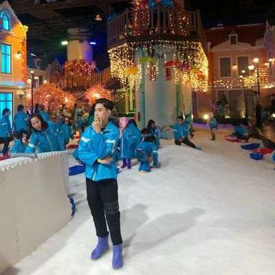
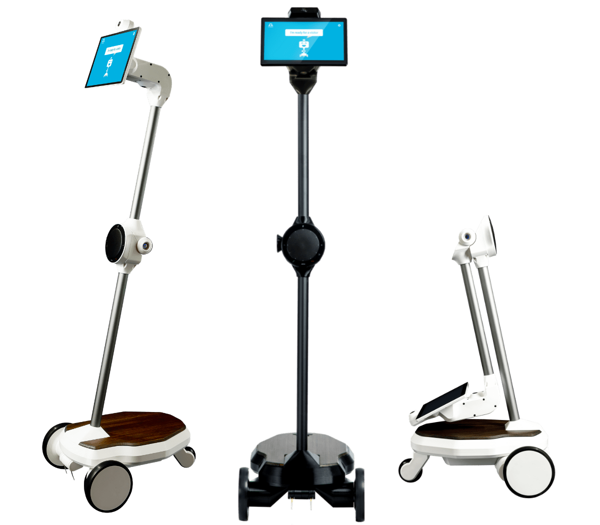

LÊ NGUYỄN ĐĂNG KHOA
20044601
ĐINH HOÀNG NAM
20062421
ĐÀO TÚ ANH
20002011

NGUYỄN LÂM HOÀNG
20055301
NGUYỄN CHÍ CƯỜNG
20009561
Robot ohmni
Robot Ohmni là một robot telepresence di động, cho phép người dùng có thể hiện diện ở hai nơi cùng một
lúc. Robot này có màn hình cảm ứng 10,1 inch, camera 4K, loa và micrô chất lượng cao. Robot Ohmni có thể
được sử dụng cho nhiều mục đích khác nhau, bao gồm công việc từ xa, giáo dục và đào tạo từ xa, chăm sóc
sức khỏe từ xa và du lịch và giải trí.

Dưới đây là một số tính năng chính của robot Ohmni:
- Màn hình cảm ứng 10,1 inch với độ phân giải Full HD
- Camera 4K với khả năng chụp ảnh 13 megapixel và zoom quang học 2x
- Loa 15W với âm thanh rõ ràng, to hơn 8 lần so với giọng nói của con người
- Micrô array 4 kênh với khả năng lọc tiếng ồn môi trường
- Pin LiFePO4 95Wh cho thời gian sử dụng lên đến 6 giờ
- Hệ thống lái Ohmni Glide cho phép điều khiển robot một cách dễ dàng
Robot Ohmni là một giải pháp telepresence tiên tiến, mang đến trải nghiệm hiện diện từ xa chân thực và tương tác.
Điều Khiển
Khoảng Cách Đọc
Đang đọc...